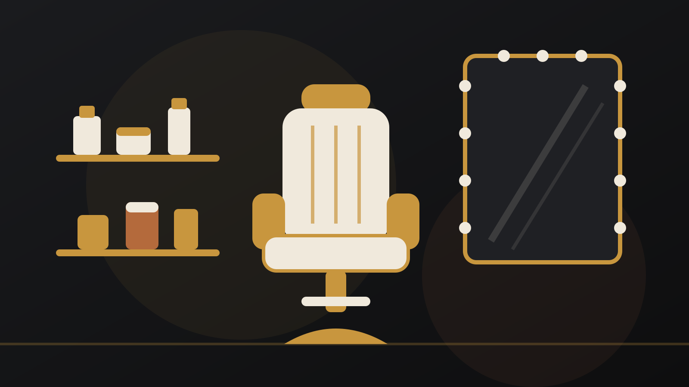
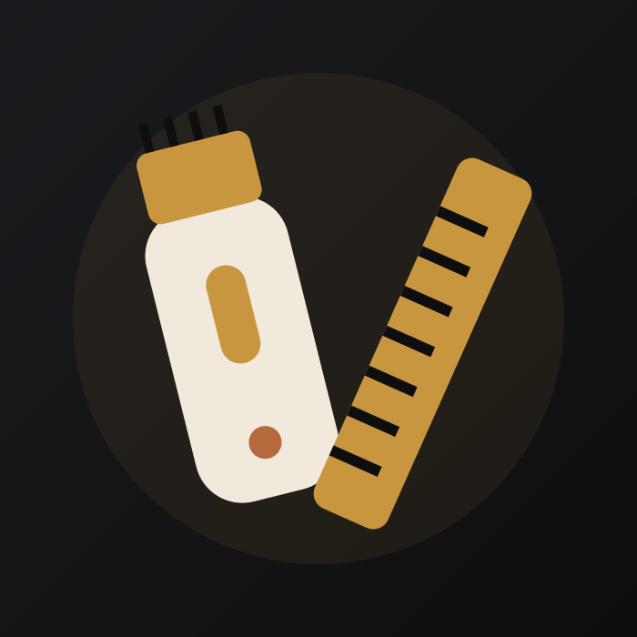
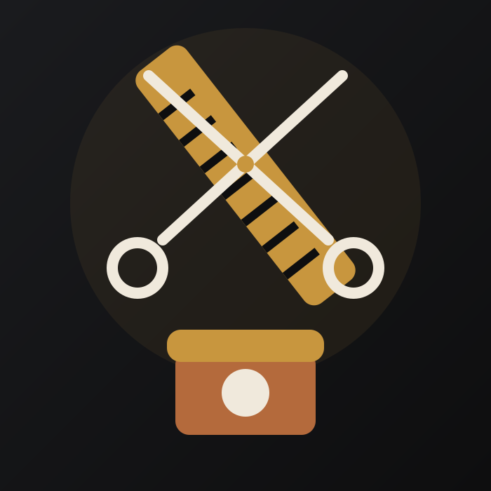
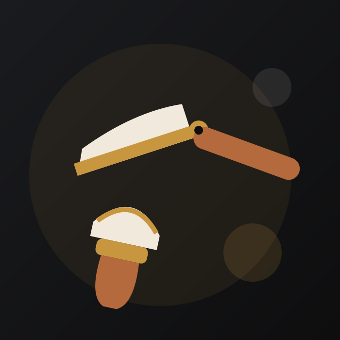
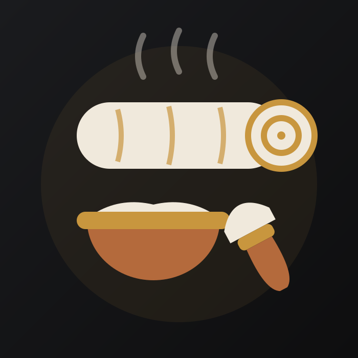
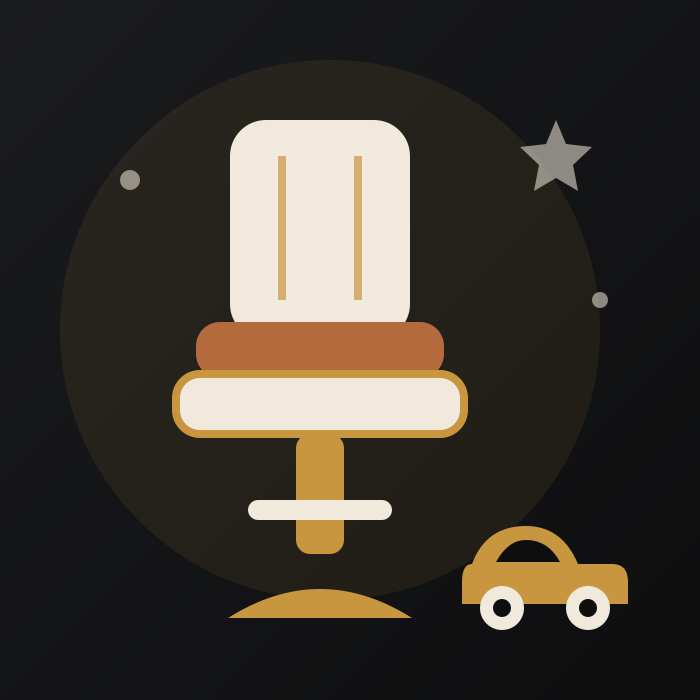

"Llevo dos años viniendo cada tres semanas con Sergio. Le enseñé una foto el primer día y desde entonces no hace falta ni hablar. El degradado me aguanta perfecto hasta la siguiente cita."
Corte + barba · Cliente fijo

Barbería clásica · Plaza de la Alfalfa, Sevilla
Navaja, tijera y máquina en manos de barberos de oficio. Toalla caliente, cerveza fría y cero prisas. En el corazón de la Alfalfa desde 2012.
Servicios y precios
Precio cerrado, se paga lo que pone aquí. Toalla caliente y acabado con navaja incluidos en todos los servicios de barba.
Corte de pelo
15 €
Tijera, máquina o degradado. Lavado y peinado con producto incluidos. 30 min.
Corte + barba
24 €
El combo de la casa. Corte completo y barba perfilada a navaja con toalla caliente. 50 min.
Arreglo de barba
12 €
Perfilado a navaja, vaciado y aceite de barba para rematar. 25 min.
Afeitado clásico a navaja
18 €
Dos pasadas, toalla caliente antes y bálsamo frío después. Como en las películas. 35 min.
Corte infantil
12 €
Hasta 12 años. Paciencia infinita y piruleta al terminar. 25 min.
Rapado
12 €
A máquina al número que quieras, con repaso de contornos a navaja. 20 min.
Tinte / matiz de canas
25 €
Camuflaje de canas natural, sin efecto casco. Corte no incluido. 40 min.
Ritual completo
30 €
Corte + barba + afeitado a navaja + masaje capilar + bebida. Una hora para ti solo.
Sin cita se atiende por orden de llegada, solo entre semana. Los sábados, únicamente con cita.
La experiencia
Esto no es una peluquería exprés. Cada servicio sigue el mismo ritual de barbería clásica, sin mirar el reloj.
Te sientas, te quitas la prisa de encima y eliges: cerveza bien fría o café de la cafetera italiana. Invita la casa.
Dos minutos de toalla caliente con esencia de eucalipto para abrir el poro y ablandar la barba antes de tocar la navaja.
El barbero trabaja tu corte o tu afeitado a mano, contorno a navaja incluido. Aquí no hay dos cabezas iguales.
Lavado con masaje capilar, bálsamo frío y peinado con el producto que le va a tu pelo. Sales oliendo a barbería de verdad.
Trabajos reales
Sin filtros y sin modelos: clientes de la casa recién levantados del sillón. Toca cualquier foto para ampliarla.





El equipo
Al reservar eliges con quién te cortas. Si te da igual, te asignamos al primero libre y acertarás igual.
Fundador. 20 años de oficio, empezó barriendo pelo en la barbería de su tío en la Macarena. Especialista en degradados y líneas a navaja.
El del afeitado clásico. Formado en Cádiz, afila sus propias navajas cada mañana. Si llevas barba de tres meses, es tu hombre.
El benjamín, subcampeón de Andalucía de barbería 2024. Cortes clásicos con raya, texturas largas y todo lo que lleve tinte.
Horario
Con cita vas sobre seguro. Sin cita, por orden de llegada y solo de lunes a viernes; los sábados trabajamos únicamente con reserva a partir de las 12:00.
Productos
Solo vendemos lo que gastamos en el sillón cada día. Si te peinamos con algo y te gusta, te lo llevas a casa.
Fijación media sin brillo, se retrabaja durante el día y sale con un solo lavado. La que usamos en 9 de cada 10 cortes. 14 €
Con argán y jojoba, aroma a cedro. Ablanda la barba, quita el picor y no engrasa. El remate de todos nuestros arreglos. 12 €
Base agua, brillo medio y fijación fuerte para rayas al lado y peinados hacia atrás. La de toda la vida, bien hecha. 15 €
Opiniones
4,9 sobre 5 en Google con más de 310 reseñas. Estas son de verdad, con nombre y apellido.
"Llevo dos años viniendo cada tres semanas con Sergio. Le enseñé una foto el primer día y desde entonces no hace falta ni hablar. El degradado me aguanta perfecto hasta la siguiente cita."
Corte + barba · Cliente fijo
"Me regalaron el ritual completo por mi cumpleaños. Una hora entera: toalla caliente, afeitado a navaja con Rafa y masaje en el lavado. Salí como nuevo y con una cerveza de por medio. Repetiré aunque no sea mi cumpleaños."
Ritual completo · Nervión
"Traigo a mi hijo de 6 años y es el único sitio donde no llora al cortarse el pelo. Dani lo sienta, le da conversación de fútbol y en veinte minutos está listo. La piruleta del final ayuda, todo hay que decirlo."
Corte infantil · Centro
"Reservé por WhatsApp un viernes a las 23:00 y a los cinco minutos tenía la cita confirmada para el sábado. Puntualidad inglesa: entré a mi hora en punto. En la Alfalfa, con lo que cuesta aparcar, se agradece no esperar."
Afeitado a navaja · Alfalfa
Reserva
Un WhatsApp y listo: dinos día, hora y con quién, y te confirmamos al momento. Sin apps, sin registros, sin llamadas.
¿Prefieres formulario? También vale. Te respondemos por WhatsApp en menos de una hora dentro del horario de apertura.
Dónde estamos
Calle Pérez Galdós 12 — a un minuto de la Plaza de la Alfalfa. Si vienes en coche, el parking más cercano es el de la Plaza de la Encarnación.